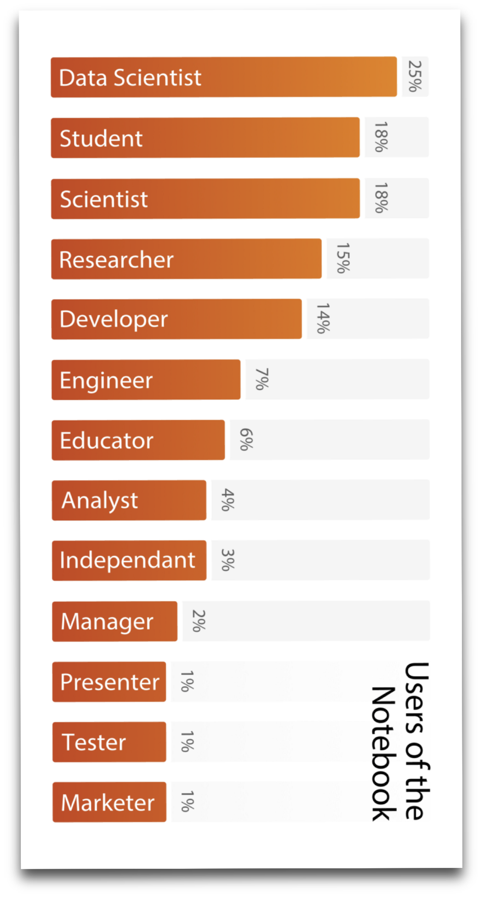

Sylvain Corlay
- Scientific software developer, Quant researcher, formerly quant at Bloomberg, and adjunct at Columbia and NYU
- Founded QuantStack in 2016
- Jupyter core developer (ipywidgets, bqplot, pythreejs, ipyleaflet)


@SylvainCorlay @QuantStack
Sylvain Corlay

Get involved in open-source early in your carrer
In both cases, start small.

Finally you will find some of the most inclusive and diverse communities.
-- Nadia Eghbal
The case OpenSSL

Work with the NumFOCUS leadership on the creation of a EU branch or separate EU entity.

Creation the PyData Paris meetup.
What next?

There is no reason for R, Julia and Python to be in competition. They have very similar communities
Duplication of effort hurts sustainability and inter-operability.
All these require collaboration beyond language boundaries.

- Fernando Perez
Raise your rand if you

and 500+ more contributors


... more than 70 different kernels
2015 IBM survey: 3M users
Approximately 600k notebooks on GitHub

Generally using the JupyterHub multi-user server


In fact, a kernel is merely an executable implementing an inter-process communication protocol. It should not need a Python runtime.


A kernel for the C++ programming language based on cling

Axel Naumann

Vassil Vassilev

A C++ template library for multi-dimensional array manipulation
Followings the idioms of the C++ STL
(iterator pairs, clear value semantics)
Python bindings to enable xtensor APIs on numpy arrays.

Julia bindings to enable xtensor APIs on Julia arrays.

R bindings to enable xtensor APIs on R arrays.

Cookiecutter projects for authoring of Python, Julia, and R extensions.

BLAS bindings to enable BLAS operations on xtensor expressions.

ROS bindings for xtensor.

ImageIO bindings for xtensor.

FFTW bindings for xtensor.

SIMD acceleration kernels.

Ever heard of numpy?
Python 3 - numpy
C++ 14 - xtensor
np.array([[3, 4], [5, 6]])
arr.reshape([3, 4])
xt::xarray<double>({{3, 4}, {5, 6}})
xt::xtensor<double, 2>({{3, 4}, {5, 6}})
arr.reshape({3, 4});
np.linspace(1.0, 10.0, 100)
np.logspace(1.0, 10.0, 100)
np.arange(3, 7)
np.eye(4)
np.zeros([3, 4])
np.ones([3, 4])
xt::linspace<double>(1.0, 10.0, 100)
xt::logspace<double>(1.0, 10.0, 100)
xt::arange(3, 7)
xt::eye(4)
xt::zeros<double>({3, 4})
xt::ones<double>({3, 4})
Python 3 - numpy
C++ 14 - xtensor
a[:, np.newaxis]
a[:5, 1:]
a[5:1:-1, :]
np.broadcast(a, [4, 5, 7])
np.vectorize(f)
a[a > 5]
a[[0, 1], [0, 0]]
xt::view(a, xt::all(), xt::newaxis())
xt::view(a, xt::range(_, 5), xt::range(1, _))
xt::view(a, xt::range(5, 1, -1), xt::all())
xt::broadcast(a, {4, 5, 7})
xt::vectorize(f)
xt::filter(a, a > 5)
xt::index_view(a, {{0, 0}, {1, 0}})
np.sum(a, axis=[0, 1])
np.sum(a)
np.prod(a, axis=1)
np.prod(a)
np.mean(a, axis=1)
np.mean(a)
xt::sum(a, {0, 1})
xt::sum(a)
xt::prod(a, {1})
xt::prod(a)
xt::mean(a, {1})
xt::mean(a)
Python 3 - numpy
C++ 14 - xtensor
np.where(a > 5, a, b)
np.where(a > 5)
np.any(a)
np.all(a)
np.logical_and(a, b)
np.logical_or(a, b)
xt::where(a > 5, a, b)
xt::where(a > 5)
xt::any(a)
xt::all(a)
a && b
a || b
np.absolute(a)
np.exp(a)
np.sqrt(a)
np.cos(a)
np.cosh(a)
scipy.special.erf(a)
np.isnan(a)
xt::abs(a)
xt::exp(a)
xt::sqrt(a)
xt::cos(a)
xt::cosh(a)
xt::erf(a)
xt::isnan(a)
Python 3 - numpy
C++ 14 - xtensor
np.random.seed(0)
np.random.randn(10, 10)
np.random.randint(10, 10)
np.random.rand(3, 4)
xt::random::seed(0)
xt::random::randn<double>({10, 10})
xt::random::randint<int>({10, 10}})
xt::random::rand<double>({3, 4}})
np.stack([a, b, c], axis=1)
np.concatenate([a, b, c], axis=1)
xt::stack(xtuple(a, b, c), 1)
xt::concatenate(xtuple(a, b, c), 1)
And much more
Lazy evaluation
res does not hold any value, nothing is evaluated ...
xarray<double> a, b, c;
// ... initialization of a, b and c ...
auto res = sqrt(cos(a) + sin(b)) * c;
... until assigned to a container ...
xarray<double> d = res;
// or
xarray<double> d = sqrt(cos(a) + sin(b)) * c;
... or upon access
// Assuming res is a 2D tensor
double d = res(4, 2);
res is an expression

Expression system
Client code
xarray<double> a, b, c;
// ... initialization of a, b and c ...
double res = (sqrt(cos(a) + sin(b)) * c)(4, 2);
The traditional implementation is equivalent to
xarray<double> tmp1 = cos(a);
xarray<double> tmp2 = sin(b);
xarray<double> tmp3 = tmp1 + tmp2;
xarray<double> tmp4 = sqrt(tmp3);
xarray<double> tmp5 = tmp4 * c;
double d = tmp5(4, 2);
The xtensor generated assembly is equivalent to
double d = sqrt(cos(a(4, 2)) + sin(b(4, 2)))
* c(4, 2);
Broadcasting
xarray<int> a = {{1, 2, 3, 4},
{5, 6, 7, 8},
{9, 10, 11, 12}};
xarray<int> b = { 1, 3, 5, 7};

xarray<int> res = a + b;

Broadcasting
xarray<double> a = {1., 2., 3., 4.};

auto res = xt::broadcast(a, {3, 4});

xarray<double> a, b, c;
// ... initialization of a, b, and c ...
auto res = broadcast(a + b * c, {3, 4});

Iteration
for x in np.nditer(a)
for(auto it=a.begin(); it!=a.end(); ++it)
a with a prescribed broadcasting shape
a.begin({3, 4})
a.end({3, 4})
a in a column-major fashion
a.template begin<layout_type::column_major>()
a.template end<layout_type::column_major>()
a in a column-major fashion with a prescribed broadcasting shape
a.template begin<layout_type::column_major>({3, 4})
a.template end<layout_type::column_major>({3, 4})
Views
xarray<int> a = {{1, 2, 3, 4},
{5, 6, 7, 8},
{9, 10, 11, 12}};
auto res = view(a, range(0, 3, 2),
range(0, 3, 2));

a(0, 0) = 0;
assert(res(0, 0) == 0);
res(1, 1) = 20;
assert(a(2, 2)) == 20);

Views
xarray<int> a = {{1, 2, 3, 4},
{5, 6, 7, 8},
{9, 10, 11, 12}};
auto res = view(a, 1, all());

xarray<int> a = {{1, 2, 3, 4},
{5, 6, 7, 8},
{9, 10, 11, 12}};
auto res = view(a, 1, range(1, _));

Views
xarray<int> a = {{21, 2, 3, 4},
{ 5, 6, 27, 8},
{ 9, 10, 31, 12}};
auto res = indexview(a, {{0, 0},
{1, 2},
{2, 2}});

xarray<int> a = {{21, 2, 3, 4},
{ 5, 6, 27, 8},
{ 9, 10, 31, 12}};
auto res = filter(a, a > 20);
res += 5;

Missing values
xtensor_optional<int> a =
{{ 1, 2 },
{ 3, missing<int>() }};
xtensor<int> b = {{ 1, 2 },
{ 3, 4 }};

auto res = a + b;
auto hv = has_value(a + b);

false || missing<bool>.Another area where Jupyter shines is Jupyter interactive widgets

Jupyter interactive widgets: thick front-end and thin back-end

Jupyter interactive widgets: thick front-end and thin back-end

The foundations for a C++ backend for Jupyter interactive widgets
Credits
GitHub
Documentation